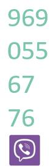

Аккуратная и профессиональная вычитка текстов в различных цифровых форматах, качественные переводы на английский язык (британский вариант) и другие виды работы с текстами.
Стоимость: 700 р. за стандартную страницу — 1800 знаков оригинала с учетом пробелов. Средняя скорость: около 6 стандартных страниц в день
Рассчитать исходя из количества знаков или слов.
Отправьте мне текст или ссылку на него, и вы получите предложение по срокам и стоимости.
ГЗК.
В стены «Кнауф»
ввинчены тонны шурупов.
Благодаря им хранятся тысячи дорогих сердцу воспоминаний,
прочитаны горы книг,
получены миллионы пятерок по физкультуре,
просмотрены сотни сериалов,
проведены тысячи самых важных секунд
и утащено несчетное количество конфет.
Гипсокартон «Кнауф-лист». Выдержит всё. Проверено
Титр:
Выдержит всё.
Проверено!
Лого Knauf
V.O.
Knauf wallboards
hold tons of screws driven in.
For thousands of fondly kept memories,
piles of read books,
millions of excellent marks in PE,
hundreds of watched series,
thousands of crucial seconds
and countless stolen sweets.
Knauf Sheet plasterboard. Tested to bear anything.
Titles:
Tested
to bear anything!
Knauf branding
Lactate is another metabolite that can provide small amounts of energy for brain tissue. This has been most studied using an exercise model, which results in increased blood concentrations of lactate. Brain uptake and oxidation of lactate increase, while glucose uptake decreases, in this scenario. In addition, neurons are now known to utilise lactate produced by astrocytes in the brain. However, lactate accumulates during seizures, contributing to acidosis, and supplementation with lactate does not appear to be a viable option for feeding the brain.
Лактат — еще один продукт обмена веществ, который может давать небольшие количества энергии для снабжения ткани головного мозга. Этот эффект лучше всего изучен в экспериментах с физической нагрузкой, которая вызывает повышение концентрации лактата в крови. В этих условиях поглощение мозгом и окисление лактата растет, а глюкозы — падает. Сейчас уже известно, что нейроны способны утилизовать лактат, который производится астроглиальными клетками. Но лактат накапливается во время припадков, что приводит к ацидозу , поэтому введение лактата с пищей на практике не решает проблему питания мозга.
Люди издавна задавались вопросом: способны ли кошки на привязанность? Может быть, кошачьи проявления любви — всего лишь средство, чтобы получить необходимые для жизни ресурсы?
В поисках ответа ученые сравнивают поведение кошек с поведением собак и маленьких детей, но так как кошка — очень любопытное, территориальное и хищное животное, результаты исследований сильно зависят от наличия новых, прежде не знакомых ей стимулов. Например — известные в Сети кошки Шорти и Коди: они равнодушны к чужим людям, но при этом нападают на их одежду.
Давайте посмотрим, что будет, если «удалить» хозяина, не добавляя ничего нового, что могло бы отвлечь кошку.
Коди почти сразу замечает отсутствие хозяина. Он зовет его, потом берет любимую игрушку и, не переставая звать, принимается бродить по комнатам. У Коди полная миска еды, чистый лоток и теплая лежанка. Неужели он ищет источник ресурсов, когда с ресурсами всё в порядке? Или он все-таки привязан к хозяину и скучает?
Так продолжается тридцать пять минут. Наконец усталость берет свое.
Когда хозяин возвращается, он берет Коди на руки. Тот устраивается у него на коленях, и стоит только посмотреть, как он льнет к человеку, чтобы вопросы о любви и источниках ресурсов отпали сами собой.
Русский язык: полностью.
Английский язык: орфография и пунктуация; грамматика.
Форматы: все текстовые, офлайн или онлайн (совместная работа, например в Google Docs), в том числе doc или docx с записью сделанных исправлений; документы pdf; а также правка непосредственно в коде (xml, html) и на страницах через систему управления контентом (CMS).
Стоимость: до 4000 р. за авторский лист — 40 000 знаков с учетом пробелов.
Рассчитать исходя из количества знаков или слов.
Отправьте мне текст или ссылку на него, и вы получите предложение по срокам и стоимости.
Правка в Word с записью исправлений
Комментарии на копии страницы в *.pdf
Правка текста на фотографии (фото конвертировано в *.pdf)
Правка документа на английском
Русский язык. «Расшифровка» аудио- и видеозаписей речи (транскрипция). Стоимость 3000 р. за час записи (50 р. за минуту). Включены собственно набор, форматирование, проверка имен, названий и терминов по доступным источникам, а также — по желанию заказчика — расстановка временных интервалов («тайм-кодов») удаление повторов, малозначащих слов и т. п., форматирование по техническим требованиям. Скорость — один час аудиозаписи в день.
Русский язык: набор с рукописных и машинописных оригиналов. 300 рублей за тысячу слов набора. Около 40 страниц (1,8 авторского листа) в день — в зависимости от разборчивости. С сохранением особенностей оригинала или с последующей правкой орфографии и пунктуации. Набор под диктовку, в том числе по телефону (около 40 слов в минуту, что практически соответствует спокойному темпу речи).
Резюме

https://www.facebook.com/lassie.coll